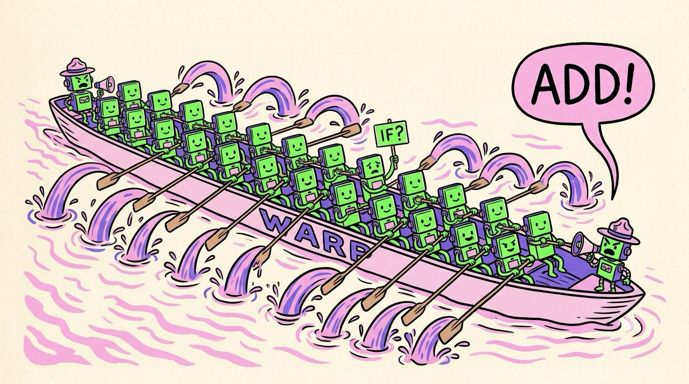

Chapter 03 · The Hardware
Inside the Chip: SMs, Warps & SIMT
Pop the lid off a GPU and you won't find "21,760 cores" floating in a soup. You'll find a very tidy org chart. The chip is divided into a few dozen to a couple hundred identical factories called Streaming Multiprocessors (SMs). Each SM commands squads of 32 threads called warps, and every thread in a warp marches in lockstep — same instruction, same moment, different data. Learn these three words — SM, warp, lockstep — and the whole machine snaps into focus.
The org chart
Here's the hierarchy, top to bottom. An H100 — the data-center GPU that trained many of today's LLMs — has 132 SMs. Each SM contains 128 small arithmetic units ("CUDA cores"), four Tensor Cores (matrix engines — Chapter 7), a chunk of super-fast scratch memory, and four warp schedulers that decide, every single clock cycle, which squad of 32 threads gets to execute next.
The warp: 32 threads, one heartbeat
Now the most important concept in this book. The SM does not manage its thousands of threads individually — that would take exactly the kind of expensive control hardware GPUs deleted. Instead, threads are bundled into groups of 32 called warps, and the hardware issues one instruction to the whole warp. All 32 threads execute that same instruction together, each on its own data: thread 0 adds element 0, thread 1 adds element 1, and so on.
NVIDIA calls this execution style SIMT — Single Instruction, Multiple Threads. It's the GPU's answer to "how do we control thousands of cores with almost no control hardware": you don't control 21,760 cores, you control ~680 warps, and each warp steers 32 cores at once. One conductor, 32 rowers per boat.

A funny zine-style cartoon, hand-drawn ink with flat colors (electric green, violet, pink on cream paper): an absurdly long rowing boat labeled "WARP" with 32 identical happy robot rowers all pulling oars in perfect synchronization, splashing water in identical arcs. At the stern, a tiny drill-sergeant coxswain robot with a megaphone shouts a single command "ADD!". One rower near the middle is sheepishly holding up a sign reading "IF?" while the sergeant glares — a joke about branching. Exaggerated, playful, no other small text. Target size ~1280×720px, 16:9 landscape; composed for a small on-page figure, subject centred with safe margins — it is letterboxed into a 16:9 box, so keep nothing important near the edges.
Generate this with your image agent, then drop the file here.
if…The catch: warp divergence
Lockstep has a price, and you can probably guess it. What happens when the 32 threads of a warp hit this?
the divergence trapif (pixel_is_bright) {
darken(); // threads 0–15 want this path
} else {
brighten(); // threads 16–31 want this one
}
The warp can only issue one instruction at a time — it cannot run
darken() and brighten() simultaneously. So the hardware
runs both paths, one after the other: first darken()
with half the threads masked off (idle), then brighten() with the other
half masked off. Your 32 cores just did the work of 16. Diverge into 32 different
paths and you've paid for 32 cores to get the speed of one.
Branches aren't evil — divergence is. If all 32 threads of a warp take the same branch, there's no penalty at all. GPU programmers arrange data so neighboring threads make the same decisions (e.g., sort work by type before processing). Also note: each thread does have its own program counter (since Volta), so divergence is correct, just slow — the hardware untangles it for you; it simply can't make it free.
The superpower: latency hiding
Here's the trick that makes the whole design work — and the answer to a question that should be bugging you since Chapter 2: if GPUs have tiny caches, don't threads constantly stall waiting for slow memory? Yes! Constantly! A read from GPU main memory takes hundreds of clock cycles. A CPU would treat that as an emergency. The GPU treats it as… Tuesday.
Each SM keeps far more warps resident than it can run — up to 64 warps (2,048 threads) parked on one SM, with all their registers permanently on-chip. When warp A issues a memory read and has to wait 400 cycles, the scheduler doesn't wait with it. On the very next cycle — zero-cost, because nothing needs to be saved or restored — it issues an instruction from warp B. Then C. By the time the scheduler cycles back around, warp A's data has arrived. The memory latency didn't disappear; it got hidden behind other warps' work.
CPUs hide memory latency with big caches (avoid the wait). GPUs hide it with massive multithreading (do other work during the wait). This is why a GPU needs tens of thousands of threads to shine: the threads aren't just doing work, they're hiding each other's stalls. The fraction of an SM's warp slots you manage to fill is called occupancy — one of the first numbers a GPU profiler will show you.
So far the hardware has been doing all the talking. Time to switch chairs: how do you tell 100,000 threads what to do without writing 100,000 instructions? Next chapter, we write actual GPU code.
Sources NVIDIA H100 Architecture Whitepaper (nvidia.com) · CUDA C++ Programming Guide, "SIMT Architecture" & "Hardware Implementation" (docs.nvidia.com) · "Dissecting the NVIDIA Hopper Architecture through Microbenchmarking" (arxiv.org/abs/2501.12084)